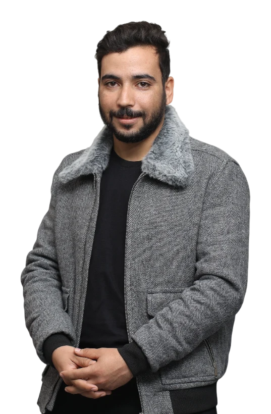
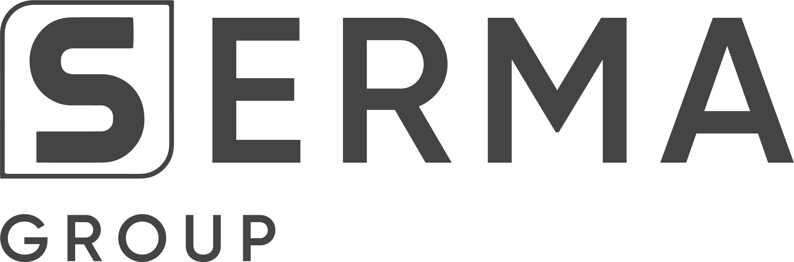

Bench architecture
Define what the bench must stimulate and measure for the equipment under test, and how it connects to instruments and the UUT.
Now at SERMA Group · Aeronautics
I design the benches that prove aeronautical equipment works — from the KiCad schematic of the test bench board to the automated sequence that runs every step of the ATP.

I'm Taoufik Rachdi, an electrical engineer (ENIS, embedded electronics & instrumentation) working where hardware meets test. Since September 2026 I've been a Test Bench Engineer at SERMA Group, designing test benches and their PCBs for aeronautical equipment and turning acceptance test procedures into automated test sequences.
Before that I spent three years in automotive validation for the Renault Alliance, finishing as lead for the Diagnostic (Diag/DTC) and Digital Avatar functions on the IVI 2 infotainment platform. That background shapes how I build benches: I design them for the person who has to run the campaign, trace the requirements, and trust the result.
Test Bench Engineer — Test Bench Design & PCB Development · SERMA Group
Define what the bench must stimulate and measure for the equipment under test, and how it connects to instruments and the UUT.
Schematic capture, component choice, layout and documentation of the test bench boards.
Translate Acceptance Test Procedures into automated test sequences that run repeatably on the bench.
Benches built for the rigour of aero qualification: traceable steps, clear verdicts, reproducible results.
SERMA Group · Aeronautics · Ariana, Tunisia (hybrid)

SERMA · Client: Renault Alliance · IVI 2 In-Vehicle Infotainment
SERMA · Client: Renault-Nissan-Mitsubishi Alliance · IVI 2
Smart Ways Innovation · Sfax, Tunisia
National Engineering School of Sfax (ENIS)
Specialisation in Embedded Electronics & Instrumentation.
ISSAT Gabès
Foundation in mathematics and physical sciences for engineering studies.
Test bench design, PCB work, or test automation — send me a message and I'll get back to you.